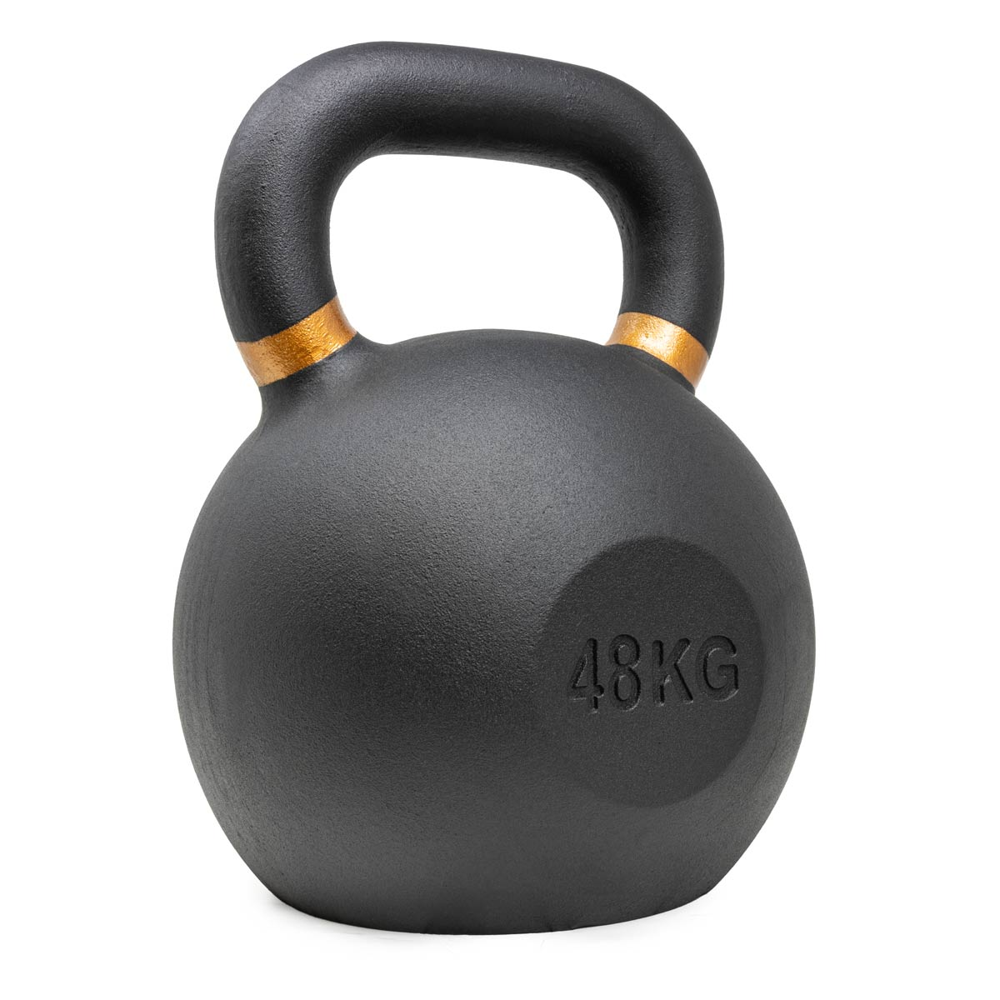

A great way to develop strength is to practice simple yet ancient exercises like the swing or the get-up.
Pavel's Simple & Sinister program prescribes:
This should be practiced around 5 to 6 days a week.
If you work diligently, with time and effort you may eventually get as strong as this monster